|
|
|
|
|
The Red Sea - Part 2
Port Ghalib to Hurghada, via the Nile
Dear all,
This page is still being worked on so
there're a few holes - some words and a background set of
photographs. Sorry about that, but hopefully it's
still a good read. And the next time you come back,
all will be grand!
So where were we? OK, well, our last email ended when we finally arrived in Port Ghalib, Southern Egypt, about 60% of the way up the Red Sea. And were we relieved to get there after a pretty hard time over the previous few weeks.
Port Ghalib – nice place, no people, shame about the flies
Port Ghalib is built around a Marsa, albeit
one that has been changed out of all recognition.
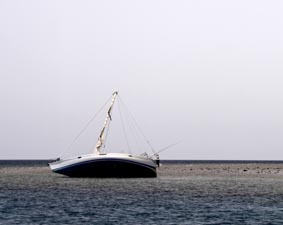
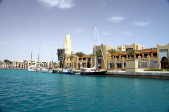 Just inside the marina, on the northern side, is the Customs and Immigration building. Here you have to tie up alongside and wait for the officials to arrive – which they did after a couple of hours. There’s the usual paperwork to fill in which, along with your passports, disappears for a few hours – while you wait and wait and wait.
In hindsight, this, our first experience of Egyptian officialdom, sets a fair stage for future interactions. Port Ghalib is a Port of Entry and has all the appropriate people and machines to sign you and your boat into Egypt, but because of some obscure local rule, everything then has to be driven to the closest international airport – about two hours away – and processed there. You have to pay for the officials’ time for this trip as well.
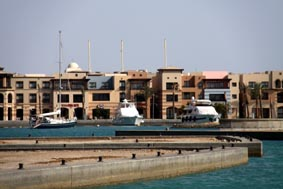 So, although we arrived just after lunch, it was getting dark by the time we were released and allowed to wend our way through the intricately laid out marina to our berth where we Med-moored, bow in. By that time, we had become well acquainted with some unwelcome local inhabitants – the flies. Millions of them. We thought Australia was bad for flies in some places – this was 10 times worse.
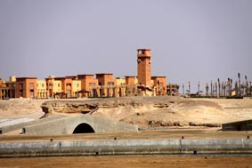 Port Ghalib is one of the many Egyptian white elephants we were to see. It is a massive development – state of the art marina, hotels, apartments, shops – and although there is still a lot of work going on (add dust to the flies), there are next to no tourists there. We were moored next to the smaller of the two hotels which, because it was a dive centre, was reasonably filled, but the other 5-star hotel seemed to have maybe 5 guests.
There is a whole area of small shops, set-up to mimic a suk (market), all full of the usual tourist tat of papyrus, cravings and pyramid key rings – but never once did we see anyone in there. The shopkeepers were pathetically grateful if you stopped and looked in their window.
Then you have the restaurant strip along the waterfront. Half a dozen restaurants, from TGIFridays to ultra-posh French – magnificent looking places, no one eating.
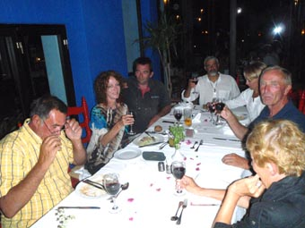 While we could not understand why on earth anyone would come here on holiday (even as a keen diver – there are better places elsewhere), for yachties on their way up the Red Sea it is a boon. It offers a safe port of entry a fair way south of the previous place – and a chance to just rest for a while – there’s little else to do with nothing for miles around. You even start to get used to the flies – an enduring memory Peter has of Jean is her lazily waving her hand across her food at our "Yippie, we've arrived" dinner – while carrying on a normal conversation.
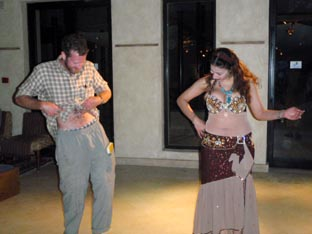 Port Ghalib was never going to be more that a quick stop and the chance to get the paperwork sorted before heading on to Hurghada where we planned to leave Hinewai to “do the Nile”. But it turned into a three day layover. Yes, yet again, the winds picked up.
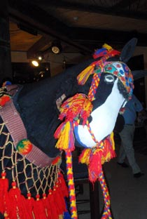
So the days were spent doing odd jobs on the
boat with the evenings spent catching up with old friends or
watching the belly dancing shows put on for the tourists –
sadly, we missed the whirling dervish show, but got chatting
to the performer afterwards – and a very nice dervish he was
too. We did catch the pantomime horse mind. 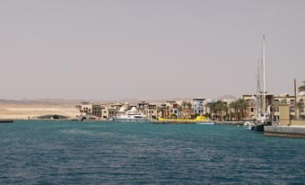
The weather download that night caught us by surprise – easterlies of around 10kts. Well, for a bit, but even after it returned northerly, the winds looked very light. We were up early and out just after dawn – taking half a million flies with us. Offshore, we used so much fly-spray to try and get rid of them, we should have had HazChem stickers all over the boat – and to no avail, some of our passengers got off in Hurghada and that turned out to be longer than expected.
At first, the weather turned out to be as forecast, a glorious reach, albeit not fast. Late afternoon, the wind eased and swung round north – again as forecast. A little birdie joined us for a rest - did he know something we didn't?
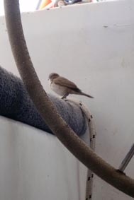
The sensible thing to do would have been to turn around and run back to Port Ghalib. But we were far enough offshore that if we stuck out the pounding for 2 or 3 hours, we’d be able to bear off, clear a nasty bit of reefed island and make for a safe anchorage at Ras Abu Soma. If we ran south, we’d be travelling down with the weather - if we kept going north, we might punch through it. We chose to head on.
This was the worst we had in the Red Sea – waves were well over 3 metres, pushing 4. Poor Hinewai . We couldn’t hold the ideal course, we were squarely crashing into the waves with the Big Girl burying her nose so deep we had green water coming all the way back to the pilot house. And we were making maybe ½ a knot. So we bore off a bit, yet even with 3 reefs, a pocket handkerchief of a headsail up and the motor running were only making 11/2 knots. (This sort of punching into bad weather goes against all your previous yachting ideals, but, Oh, were we getting tired of the Red Sea by then).
After about 5 hours and with the wind easing, we eventually bore off – while the pounding eased and our speed improved, we were then more side on the waves and had to stop the motor since it doesn’t like being rolled though 70 degrees when working. We did switch it back on twice – first time to bring us back into the wind so we could drop the last bit of main and raised a reefed mizzen – the second time when we got close enough to the reefs surrounding Ras Abu Soma to motor in. Oh, were we chuffed at that point.
Ras Abu Soma is a natural harbour with a double band of reefs protecting it just north of the major port of Safaga – we considered heading there but it’s a tricky entrance and there’d be the risk of meeting a big ship coming out in the dark. Ras Abu Somahas a number of mass-market hotel complexes on its shore and while there’s nominally a marina there, a couple of yachties heading south had advised against going there – small, no facilities and expensive. So we chose to slot into a little bay with a couple of hotels flanking it and dropped our anchor about 200 yards off-shore. And opened a bottle of wine to celebrate our arrival – even though it was only about 0900.
By 1000, we had dozens of wind-surfers zooming all around us – it seems that Ras Abu Somais one of THE places in the world to windsurf. Well, the winds were certainly still strong enough.
By 1100 the first other yacht appeared and anchored close by. We exchanged weary waves. Island Fling and Mistral also called up on the radio – they’d left about the same time as we had, but had headed even further out to sea so had had a long hard fight back inshore. We’d ended up a bit ahead of them since they were heading into Safaga and a nice anchorage that Lo of Mistral knew. Once the wind dropped out a bit, they’d head though a narrow passage between an island and the mainland to Ras Abu Soma. Or so they thought.
Then we started to hear a slightly terse conversation on the radio. The Egyptian army had come out and told them they were anchored in a restricted zone – and worse, the passage they planned to use was also closed. They had no option but to head out to sea again to get around the island and into the channel for Ras Abu Soma. It was late afternoon when they arrived – and they were not happy bunnies.
And this was compounded when Lo headed ashore to give his dog, Yugo, a run on the beach of the hotel directly in front of us, only to be jumped on by Security and told it was a private beach and yachties were not welcome. Yugo showed exactly what he thought of that with a large deposit.
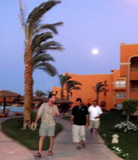 So we hunkered down and waited for the weather to pass. The next day, Jean and Leonie headed ashore in the dinghy, parking it on the edge of the beach of the other hotel, and on into Safaga , but had problems when security wouldn’t let their taxi with all the shopping back onto the site. They were not happy about having to carry everything over 2kms.
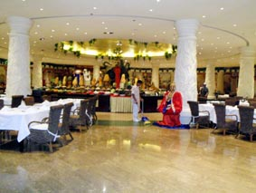 But at least, they’d let the dinghy ashore so that evening we all headed in for a drink and dinner. The hotel complex was vast, and full of Russians. We stopped at a bar and they seemed really surprised when we paid cash for our drinks. Later, we eventually found this vast barn complex with seating for, well, maybe 1,000 people, with a huge circular food serving area – it would have kept Napoleon's army going all the way back from Moscow. But there were maybe 10 other people in it but it soon filled up.
They were just grabbing a plate and helping themselves – so we followed their example. A wine waiter (well, bloke for drinks) appeared so we ordered drinks. And it was a very good meal and pleasant time. At then end, we stood up to look for where to pay. There was nowhere – and none of the staff spoke English (our Russian is a little rusty). Then we got jumped by management and security.
It turned out that this hotel was one of those where everything is supplied – board, food, drinks – in the price of the holiday. We’d wondered why everyone was wearing a bright purple wrist bracelet (like new born babies have) – it was to prove they were kosher guests. We weren’t wearing one so they thought we’d sneaked in for a freebie – of course, that had never crossed our minds.
Eventually, someone arrived who spoke English and the misunderstanding was sorted out – ish. We paid (ouch!) and were escorted off the premises with a warning that if we appeared again, the police would be called.
How daft – by that time, 8 yachts were sheltering in the bay – and we were all caught there for three days. The hotel could have made a mint off us all.
At last, the winds dropped to a manageable 20+ knots so off we headed in company with several other yachts. All bar us headed offshore, but we chose to stick close inshore – we were hoping to get a lift off the winds coming along the land – and to try and avoid the bigger swell. It seemed to be the better choice since we reached the entrance to Hurghada a couple of hours before anyone else.
Hurghada is now a major tourism spot, serving
two markets –
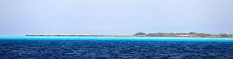
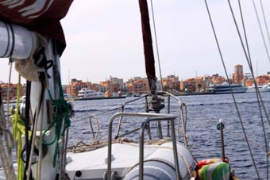 A couple of miles out from the Marina, you call them up on the radio and they have a work boat waiting for you. It leads you round to your berth, taking a line from you and attaching it to one the buoys that allowed us to Med-moor bow in. We had arrived in Hurghada, a place we planned to stay a couple of weeks.
Hurghada – white elephant, X-Rays and Tourism Hell
Hurghada Marina is one of the most
spectacular marinas we have been in - and without a doubt,
one of the best. The water is that
iridescent turquoise due, we were told, to the marina being
laid underwater with white sand. It has a restaurant and
shopping strip most definitely set up for the money set –
meals and drinks were pushing European prices. Above and
just behind the strip, were five story apartment blocks –
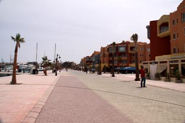 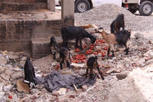
But, yet again, most of the time the strip was very quite, only livening up a little in the evenings.
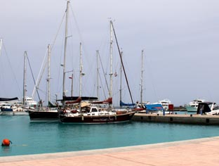
Within a couple of hours of our arrival, FELIX, who were to be our agents for the rest of Egypt and the Suez Canal, arrived and introduced themselves. We sorted out the few things we needed from them with respect to the boat, and then asked about any local doctors or hospitals.
By this time, Peter was having trouble walking, his knee being swollen up something awful. The last week or two had been no fun for him. FELIX stepped straight into the breach, arranging to pick us up the next morning and take us to the local hospital where English was spoken. With that sorted, we ordered in a batch of pizzas from one of the restaurants on the strip and joined Island Fling for dinner.
The next morning, FELIX turned up with a taxi and ran us round to the Red Sea Hospital. It’s clean and feels professional, and with little waiting, they took Peter’s details and showed him through to an examination room where a young Egyptian doctor examined his knee (Peter only whimpered a few times with the manipulation – and how do they know exactly where to press to find where it hurts?). Then, to Peter’s chagrin, an orderly arrived with a wheelchair and wheeled him the 40 yards to the X-Ray room.
The X-Ray machine wasn’t the newest Peter’s ever seen (and he’s a bit of an aficionado after his ribs) and clearly made in Russia, but it buzzed and whirred as they should and he was wheeled back to the examination room to wait. There are only so many things to read in an examination room – who made the lights, the box of gloves, and the box of syringes (albeit no sharps). Unlike Australia where he was looking at the X-Rays of his ribs on screen within a minute, it took an hour for the film to be developed.
Eventually the Doctor returned with the film, held them up to the window and went “Fsssss” – that intake of breath that mean’s this is going to be expensive. He explained there was clear damage of an old sporting injury (Dad, do you remember me ever doing my left knee when playing rugby?), possibly first signs of Arthritis (OH GOD!!!!!!) and probably a MC Ligament Grade 2 sprain. But the X-Ray couldn’t confirm this – it would need an MRI – cost US$700. And if it was MCLG2 – or turned out to be worse, it could mean an operation.
Jean and Peter disappeared into a huddle “US$700!” ”Operation?” “Egypt!” “Er, what are the other options?”
With the help of the chap from FELIX, we discussed alternatives. The Doctor sorted out a proper knee brace rather than the pressure bandage Peter had been wearing for the last month, prescribed two sets of anti-inflammatories and advised a month’s rest. We thanked him and headed back to Hinewai to investigate flights back to the UK on the net.
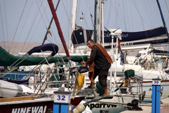 Peter took the Doctor’s advice for a few days, but soon started to suffer from cabin fever. There were some jobs he could still do on the boat – repacking the rudder gland in yet another vain attempt to stop the leaking – and Bob of Island Fling was a star, keeping him company as he hobbled to a local bar. We used to feel daft, catching a cab to a shop only a few hundred yards away.
And getting on and off the boat was fun, needing a big step onto the anchor and a clamber over the bow.
But the Doctor was right, the more Peter kept his leg up, the less painful and easier it became. We started to plan our next bit of the trip.
Buying things in Hurghada
One mandatory for our stop in Hurghada was to leave Hinewai and visit some of the great Egyptian history at the southern end of the Nile. A couple of other yachts from the Rally who arrived way before us had recommended Jwana Tours (+20161187284) as the company to organise the trip – and that Yahia Abdou Ahmed (or John as he liked to be called) was the tour guide to ask for. We would thoroughly recommend John - his contact details are Mobile: (+2) 012 3006 803 - Email yahia_abdo@hotmail.com.
Jean confirmed that Bob & Leonie of Island Fling and Guy & Michelle of Mailys were into the idea and we headed off to Jwana and booked a trip for the six of us. Peter was delighted to find they were right next to the MacDonalds in the main street.
Suitably sated, we popped next door to a local chemist to top up the anti-inflammatories. You seem to able to buy anything you want in Egypt – who needs a prescription. Every chemist had big signs for Viagra in their windows and spoke Russian.
Russians! – Hurghada was full of Russians.
Most of the shops had signs in Russian. The shopkeepers had
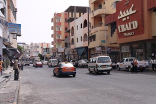 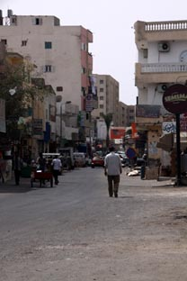
But once out of tourist-street, everything was different. To the north of the marina was the local ship yard, full of wooden fishing boats dragged up on shore being repaired or broken up. Around this area, were streets of shops for the locals, 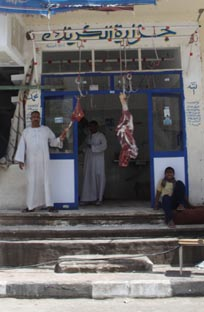 some of which were supplying the boating side. Little shop fronts, maybe 10 feet across, packed with piles of oil, coils of rope, viscous hooks and nets, and lots of electric pumps. We spent quite some time looking around them for various parts we needed – generally, if you kept digging you found what you needed – or something close that could be adapted.
And dotted through the area were little side streets with odd little shops and stalls. The butchers was an interesting place, but the best were little stalls selling vegetables. As ever, the produce would never have passed the "must look beautiful even if they are tasteless" test that veggies seem to undergo before appearing in our western supermarkets. Who cared! They reminded us of how good vegetables should taste, especially the tomatoes.
We even managed to track down a place run by a German ex-pat that reputedly sold bacon - real bacon - proper bacon. Bacon that is crying out to be put between two bits of buttered white bread and sprinkled with dark vinegar. Sadly, it was never open while we were there - the windows all shuttered up.
The Egyptian government had just announced that in order to combat Swine Flu, it was slaughtering every single pig in Egypt! If it wasn't true, it would be funny. The shop owner had decided, with some justification, that there was a real risk someone might Molotov Cocktail his shop if opened in that climate.
The Nile, floating hotels and lots of temples
Three o’clock in the morning found six bleary eyed travellers lifting their bags across pulpits or tottering down their pasarelles, before heading off to the main gate where our minibus awaited us. After a couple of stops to pick up some other tourists, we headed out into the desert – although, being dark we couldn’t see it. The driver apparently knew some shortcut because we found ourselves bouncing along a narrow sandy track for a while.
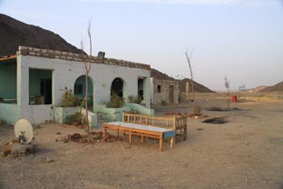
Dawn however was spectacular as the sun
started to light up the rocky landscape – the shades of
greys, browns, oranges and yellows that we’d been seeing
from offshore.
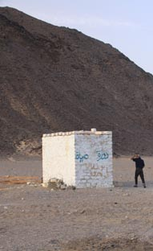 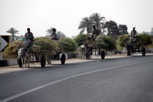
As we got nearer to the Nile, the landscape started to change to lush greenness with tracts of sugar cane. It was a little like being back in Queensland, right down to the narrow gauge cane trains chugging along with racks of cut cane going for 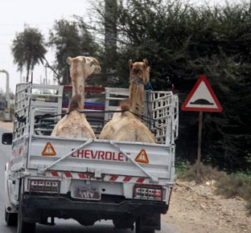 processing. The road transport was a little different mind.
First stop was in Luxor where the six of us met our guide, John, as he asked us to call him. The guide can make or break a trip such as this – and it would be his job to make sure the six of us got as much out of it as possible. We sat in a beautiful garden, sipping chai, and chatted – all the signs were good – he had a laconic sense of humour and when he smiled or laughed, it carried into his eyes. And we soon realised he had an encyclopaedic knowledge.
Aswan - broken rock, dams and Kings
From Luxor we headed on to Aswan, arriving late morning and checking into the Cleopatra Hotel where we were staying that night. After a local lunch in a local restaurant, we headed off in the minibus with John to the Broken Obelisk. This was to be found at the site where much of the granite for the temples was quarried.
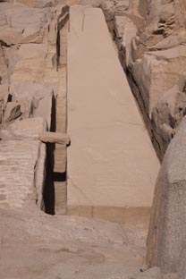 What a project it was to be – the largest obelisk ever hewn – it would have stood 40 metres high and weighed in at over 1,100 tons. The Ancient Egyptians saw the obelisk as a focus for communicating with their Gods and so it had to be perfect – made in one single piece.
They’d have started off with a good looking shelf of granite, and by hand started to chip away the rock around to leave the obelisk lying on its side. And remember, this is pre-metal tools days – their chisels would have been hand sized blocks of dolerite, a stone notionally hard than granite, with which they would slowly hammer out the shape. They had completed three sides and were working underneath it to create the fourth when it cracked.
How many thousands of man hours must have been wasted at that point, but they just went “Bugger!”, went to another part of the quarry and made a smaller one – although we'd guess it was a pretty career limiting moment for the person in charge of selecting that piece .
Apart from the awe of the mistake, the other thing the visit drummed in was how hot everything was going to be. When on the water, there’s almost always a little cooling breeze – here the sun heated the rock which radiated back at us. We felt baked alive.
The next stop was the two Aswan Dams and they are pretty impressive – funnily enough the older smaller British dam more so than the High Dam, its bigger Russian-built cousin a little up-stream. But then the Brit version is stone and looks like a big dam – the Russian one looks more a humungous pile of earth. The statistics for the project were too impressive for this gentle story – Google it!
After dinner in the hotel that night, we all turned in early – the next day we would be boarding “Marquis II – The Song of Egypt” - the floating hotel that was to carry us down-river back to Luxor.
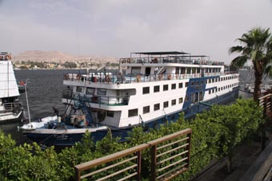 We’d been a little concerned what she would be like – after all we were paying budget rates – but albeit a little worn around the edges, she was fine. Two decks of cabins with bars, a pool and restaurant above and engines and other bits below.
We weren’t due to leave until the afternoon, so John suggested a few places to visit. He warned us there’d be a fair bit of walking so Peter declined and with gritted teeth hobbled the 50 yards to Aswan’s waterfront MacDonalds to make use of its free wi-fi and watched the others head off.
(Jean's doing a bit to go here on Philae, a village and camel rides)
All aboard - and down the Nile we head
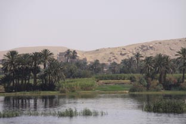 Dead on time, the task of shuffling Floating Hotels started. They raft up, up to six or seven deep, and if the boat due to leave is right inside, all have to move and re-berth. We weren’t quite the deepest in – only two other boats had to move – and about 15.30 we were off.
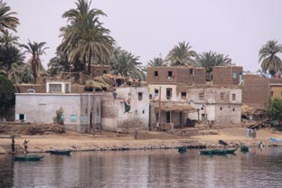
After a pleasant hour or so sitting on the
top deck with cold beers watching the Nile slide past, we
all popped back to our rooms to change and prepare for
dinner. 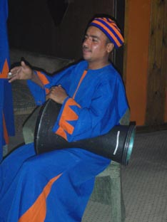
Dinner itself was buffet style with a wide selection of different dishes, local and European, and heaps of sweet sticky desserts. Half way through, we all rushed up on deck to watch our first sunset over the Nile.
After diner, we had a display of Egyptian drumming and a couple of drinks in the bar before bedtime. It felt very odd – you could hear the low drone of the engine, and while there was a vague sensation of movement, there was none of the pitching and rolling you have 24/7 with Hinewai, however slight it may be sometimes.
Kom Ombo - a double barreled temple
It was around mid-morning the next day that we came alongside and could see our destination of the day - The Temple of Kom Ombo
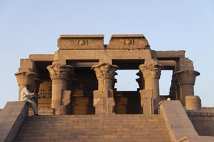 Kom Ombo is unique in that it is equally dedicated to two Gods - the crocodile headed Sobek and the falcon headed Haroeris. It is so equally dedicated that each side of the temple is a mirror image of the other - two identicals templs stuck together.
Sadly, most of the grand entrance has been lost, but the centre two side by side entrances have be rebuilt
It was a nice short walk to the entrance and we huddled around John like ducklings round their Mum. Having missed Philae in Aswan, it was Peter's first experience of listening to him talk and he was well impressed by John's knowledge and understanding of the site - and how well he took us through the key elements.
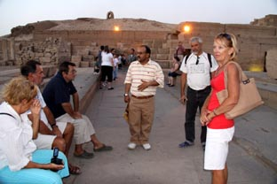
Which was important since we were all a
little disappointed that the Marquis II was only
stopping for 45 minutes. This is so daft -
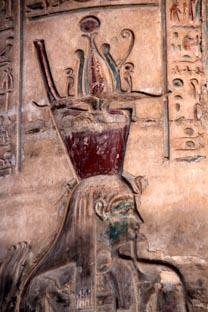
This is the time where you just wander about by yourself and see the many many little things - maybe just a tiny fine carving, a certain view, a clever piece of building work - and find those moments where you can almost picture the temple as it would have been when built - and when it was full of people using it as their place of worship. Sometimes it can just be a carving still showing traces of the bright paints that everything was covered in that catches you imagination.
Back to the Marquis II and off we went again. We had a full day and night before we were going to be stopping again so it was time to put the feet up in the shade and settle down with a good book or a few games of cards.
As darkness fell, Marquis II moored up - seemingly in the middle of nowhere. Jean did a bit of ferreting and we learned that we were stopped here to kill a few hours to ensure we would arrive in Edfu at the right time the next morning.
Edfu - The home of Horus
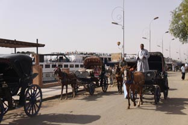 The temple of Edfu was the next stop. Unlike most of the temples, it is not built directly on the bank of the Nile, but a mile or so inland 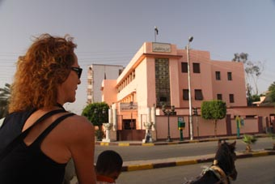 on a small hill.
No coaches, minibuses or taxis here. Waiting for the boat to berth were tens of horse drawn buggies. Our three couples split up across three buggies and off we clopped.
Despite the boy's best efforts, we could not
get our buggies to race each other 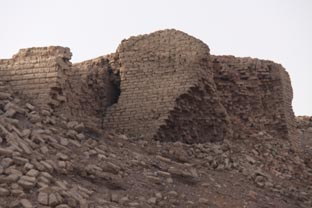
After 10 minutes clopping through the small
town, we came through the remains of the mud-brick boundary
wall that used to surround Edfu and 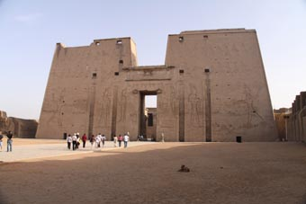
Edfu is the best preserved of all the temples in Egypt, even though its construction was finished way back in 55BC.
The Pylon is vast and if it is awe inspiring for us visitors, what must have it been like for the Ancients - most of whom were never allowed to pass through its gates into the temple complex.
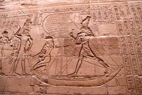
Once again though, we only had 45 minutes here, so it was another quick whiz around with John trying desperately to explain what we were looking at.
But he did go off his usual beaten track for us. Knowing we were all yachties, he took us outside the inner complex where running 10 feet away from the main wall is a second, 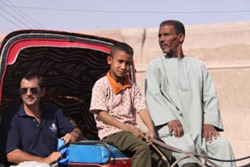 over 20 feet high. The walls are covered in hieroglyphs, including the long and involved story of Horus and the goddess Hathor traveling in their sacred barges. Elsewhere, Horus is seen battling his enemy Seth (who's shown as a hippo) from his barge. Sadly, as with much of this art, the faces of the Gods have been defaced by zealous Christians over the years.
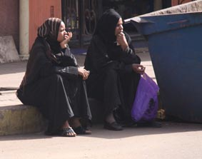
Seething with frustration again, we had to leave way too soon go get back to the boat - they tend not to wait for you. Again, we passed through the township where the people are clearly used to the little horse buggies clattering back and forth with tourists in them.
Indeed, it was one of the few places where not even the kids called "Heellllooo Miiister".
Back aboard and heading on to Luxor
We were now on the homebound leg - no more trips ashore until we got to our destination in Luxor. But soon after leaving Edfu, we came across the Nile Barrage. 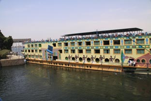 The High Dam so affected the water flow that parts of the Nile risked becoming too shallow to be navigable.
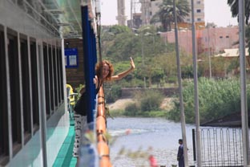 To counter this, a barrage was put across the Nile, with a 15ft difference in the water levels. So the Floating Hotels all have to go through a lock. Even though it's large enough for two at a time, the sheer number of the floating hotels means there's usually a wait - in our case, for almost an hour.
While we were waiting, Jean and I wandered down to the bow and looking over the rail, chanced upon the Captain off the bridge for once. He invited us down to meet him and have a look around.
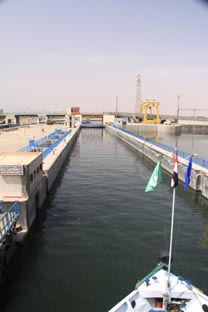 His bridge is tiny, running the width of the boat, but only wide enough for him to sit as his wheel - with just enough room to squeeze behind him. While the 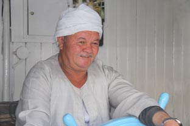 boat has a small wooden steering wheel, he never uses it, relying instead upon a joystick directional and propulsion system.
At last, we were ready to move into the lock so he shooed us out so he could concentrate on the task in hand. Once in, with another hotel behind us, we quickly dropped down to the lower level.
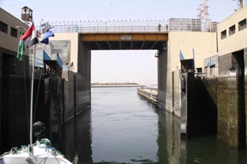 With little to see, we all went below to get changed for the final night's entertainment - an Egyptian fancy dress party. Fortunately, we'd all picked up the odd souvenirs and between us cut a pretty good group effort. Far better than most of the other boring passengers. 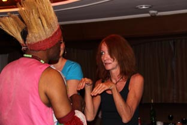
It was a great night, with much audience participation. Two memorable moments were "The Mummification Race", where Guy was wrapped from head to toe with a roll of toilet paper, and Jean's sterling performance in the "Emulate a Namibian Witch Doctor's moves" display. 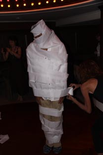
Even though we’d only been aboard a couple of days, we felt a bit sad as we packed the next morning – it had been a fine experience. Marquis II arrived on time and we were soon disembarked and down at the Lotus Hotel, our base for the next couple of days.
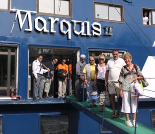 This is one of a line of hotels, all water frontages, but set back a bit and very strangely shaped, desperately trying to give every room a view of the river from their balconies.
It worked – just – we could see the Nile, but also a large blank wall and service pipes of the hotel next to us.
John, as attentive as ever, called us all together and suggested that the afternoon could be spent over on the West Bank, visiting the Valley of the Kings and Queen Hatshepsut's Temple.
Peter, who had visited all of these during his first visit 20 years before, knew how much walking this would involve and took the hard decision to stay at the hotel while the others headed off for their afternoon trip.
(Jeans doing a bit to go here on the Valley of the Kings, the temple of Queen Hatshepsut and the Colossus of Memnon - the meantime, here's a photograph of the Colossus and the immortal words Shelly wrote when he saw them)
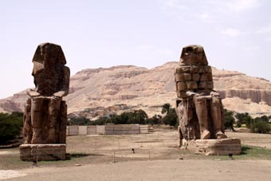 I met a traveller from an antique landWho said: Two vast and trunkless legs of stone Stand in the desert. Near them on the sand, Half sunk, a shatter'd visage lies, whose frown And wrinkled lip and sneer of cold command Tell that its sculptor well those passions read Which yet survive, stamp'd on these lifeless things, The hand that mock'd them and the heart that fed. And on the pedestal these words appear: "My name is Ozymandias, king of kings: Look on my works, ye Mighty, and despair!" Nothing beside remains. Round the decay Of that colossal wreck, boundless and bare The lone and level sands stretch far away
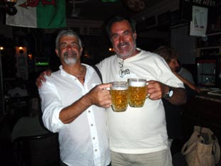 That night, Bob took us across the road to a little “English Pub” he’d spotted when they were driving back – and it wasn’t a bad night. They did a fair approximation of Pub Grub, but sadly, despite all the beer mats, signs etc, only served Egyptian beer. And Man Utd beat the Arsenal in the match we watched.
Over a very early breakfast on our final day, John proposed a pretty full intinary but after some discussions, we decided to concentrate on just one place – the Temple of Karnak. We hoped it would gives us time to really have good look - and it was a fine decision to make.
Karnack is one of the great wonders of the world, a series of overlapping temples and halls - and teeming with tourists. Peter had been here 20 years ago - and reckoned there were 10 times more people here. They do tend to clutter the photographs sadly.
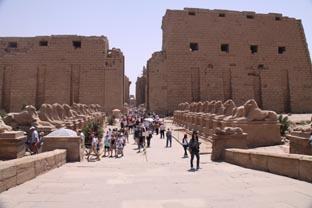 As with most temples, the entrance to Karnak is a great pylon, sadly not in as good condition as Edfu. But not because it fell down - it was never finished. The Pharaoh building it died before completion. His successor had his own monuments to build so it was left. But this slightly unfinished air is more than offset by the magnificent avenue of sphinxes that lead to it.
Inside are a series of smaller pylons, each being the entrance to a new section of the temple. Some are lined with great statues, some with obelisk - sadly for many, it is simply the remains that are left.
The sheer scale of the complex confounds you. It must be more than 100 acres, with a sacred pool and offshoot temples. It actually consists of four discret areas or precincts. What really blows you away is that only one, the Precinct of Amun-Re, is open to the public. And that's huge.
However everything is crowned by the great Hypostal Hall, which covers 50,000 sq feet and where 148 tulip topped columns stretch up in the sky. On his first visit here many years ago, Peter described it like “being a mouse in a field of corn”.
The line came back to him as he stared up at the row after row of columns stretching away. But he’d forgotten the vividness of some of the painted friezes that still remain around the top of some of the pillars and the vast roof stones.
As ever, John was a star, walking us through the history of the temple, its development and significance – picking obscure walls and taking us through the stories in the hierogryphics – and finding a little café next to the Sacred Pool where cool drinks were gratefully consumed.
And then giving us a couple of hours so we could explore the complex ourselves – Peter, overwhelmed by the numbers of tourists, headed towards one of the side temples – it would have been a major attraction if it stood by itself somewhere, but here was dwarfed – where an archaeological dig and restoration work was going on.
While Jean wandered around the precinct avidly photographing everything, he spent a happy hour fossicking through a couple of acres of fragments – some the size of his fist, some the size of a small car – all the bits of masonry that had no home and that were waiting like a giants jigsaw to be put back together. Some pieces were just lumps of rock, some had intricate carving on them as fresh as the day the mason laid his tools down, and some still showed traces of the beautiful paintwork.
Everywhere you looked, you'd see the remains of walls and statues - the tourists were dwarfed and looked insignificant.
What must this have looked like when a living part of Egyptian society, walls upright, painted along with the statues, which in themselves were the personification of a God and worshiped as such?
We spent almost four hours in Karnak - and could have spent 4 more days, but all too soon the time to leave came and we settled down in our minibus for the trip back to Hurghada.
Here we were going to be saying good-bye to Island Fling and Mailys. They’d be heading on as soon as possible, although in Island Fling's case this was not as soon as they hoped – their repaired boom took several days longer to arrive than they’d been promised.
Peter, for once doing what his doctor and wife told him, was going to spend a week with his leg up, before we headed the last 200 miles north to Port Suez, The Suez Canal and more adventures in Egypt. But that’s for later.
In the meantime, it gave Leonie of Island Fling the chance to cut Peter and Jean's hair.
Next Log Page: The last of the Red Sea and the first half of the Suez Canal
|
|
|
|
|
|
|
|
The Crew The Route The Yacht The Log Guestbook Links Contact Us |
|
|
|
|
|
Home |
|
|
All Original Content of this Web Site Copyright © 2000, 2001, 2002, 2003, 2004, 2005, 2006, 2007, 2008, 2009 Ocean Odyssey Pty Ltd |